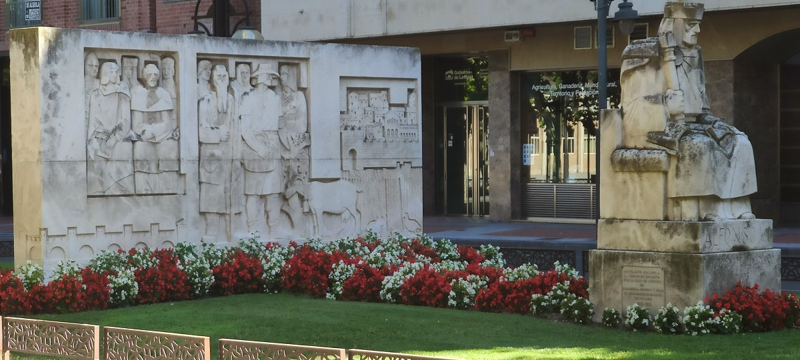
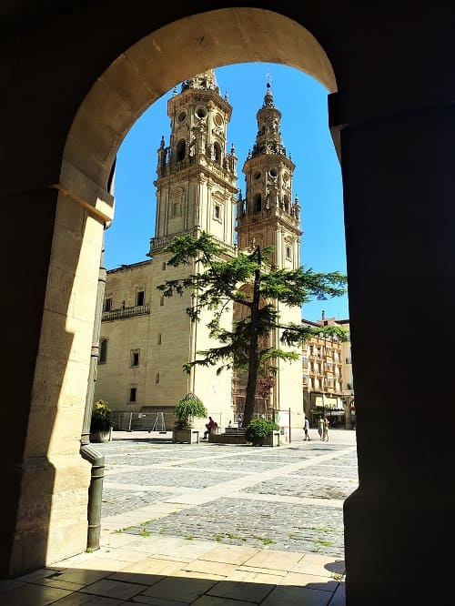
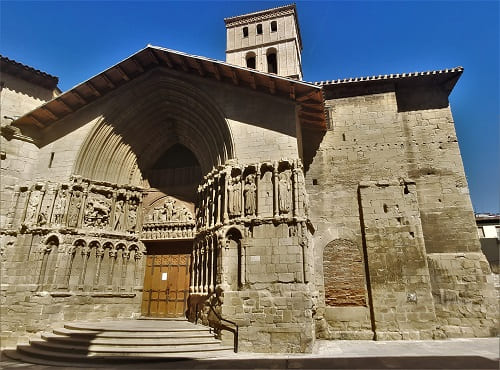

1. Travel through the North of Spain
August 5 to 11, 2021
Day 2, route through the Rioja Baja
August 6, 2021

This time I leave Miranda de Ebro to visit towns in the south of the area such as Sajazarra and Casalarreina, both towns among the 100 most beautiful in Spain.
Sajazarra has a very careful and homogeneous architecture that makes it the prototype town of the area. As claims the church of the Assumption and its castle.


In the case of Casalareina with a very important Romanesque monastery, the monastery of Nuestra Señora de la Soledad. From the monastery that would be erected at the beginning of the 16th century by which he was until then the bishop of Palencia. It would be continued by his brother who was constable of Castile and as a particular note it would be the first site in Spain consecrated by the pope.
The main doorway of the monastery is, without a doubt, the richest in the region, a stone altarpiece, housing La Piedad in its tympanum, at whose apex the symbology of the Eucharist, the Pelican. The set of the cover is a funerary monument to Christ, expressed in the theological and allegorical-pagan double language, reconciling both doctrines (characteristic of the Neoplatonic renaissance), dominates the "candelieri" theme. It is shown in one of the following images together with the Pobes palace and the church of San Martín, another of the places to visit in this town.


Then I would continue with Santo Domingo de la Calzada as the main course of the day with its impressive cathedral, and its medieval atmosphere, a city through the Camino de Santiago.

Santo Domingo de la Calzada's main attraction is its cathedral, and it is a must on the Camino de Santiago from France. It has been from its origins a place of pilgrimage since the one who founded the town would build a bridge for the passage of pilgrims as well as a hostel and a hospital. From this fact the town would begin to grow and later it would be granted the title of town or population and a church would be built,
the current cathedral of El Salvador.
It is built on a Romanesque church and would be completed in 1232, from being a church to a collegiate church and later to a cathedral.
The primitive Romanesque church was built under the invocation of El Salvador and Santa María, to which Alfonso VI donated land for its construction in 1098. It would be the seat of the Bishop of Calahorra-La Calzada. What makes it more relevant is that it is a crossing point on the French way to Santiago de Compostela, which is why it is visited by thousands of people every year.
The temple has three naves that communicate behind the altar, at the head of the plant, giving rise to an ambulatory. The altarpiece dates from the 16th century and is of high quality as can be seen in the images. It also has a chicken coop inside the cathedral that recalls the miracle of Santo Domingo de la Calzada in which
a chicken sang after being roasted.
After seeing the cathedral, I would go up to the tower where there was a museum of old clocks and you could see the clock on the tower.
Another of the places to visit is its great wall around the old town, which is very well preserved. Several of the sections have been converted into homes over the years, taking advantage of its stone for its walls.
The Plaza Mayor dates from the 18th century and it is worth visiting the
old jail where you can see some drawings carved by the prisoners. There are signatures or engravings from more than 3 centuries ago that are preserved with glass as protection.

Another place to see is
the convent of San Francisco, which has a cloister and a large museum with different themes, mainly religious.


Also visit
Nájera, where its monastery stands out, a city with a lot of history, seat of the Navarrese kings. This city became the capital of its own kingdom, in the 10th century before La Rioja existed as a region.
Sancho III, around the year 1000, was the great promoter of the city of Nájera, where he celebrated Cortes and granted the famous Nájera charter, the origin of Navarrese legislation and the basis of national law. He favored pilgrimages to Santiago de Compostela, establishing hostels and hospitals, and turning the city into a key point on the Jacobean route of the Camino de Santiago.
 The monastery of Santa María la Real
The monastery of Santa María la Real houses the tombs of numerous families from La Rioja, Navarra and the Basque Country from the 16th to the 18th centuries. Built in 1517 and 1518, in the Gothic-Plateresque style and a Royal pantheon with numerous buried Castilian and Navarrese kings.

Finally, a visit to
Logroño, a city with several monuments but not as important as Santo Domingo or Najera in terms of history. It is currently the capital of the autonomous region of La Rioja and the largest city in the region, however this was not always the case. In the 10th century it was barely a town depending on other lordships such as San Millan de la Cogolla and in the year 1095 Alfonso VI granted privileges with the jurisdiction of Logroño. This was so due to its strategic position as it borders the kingdom of Navarre and Aragon. Little by little, as it was a transit point on the Camino de Santiago, it would acquire population around crafts and commerce and gain importance and it would not be until the 19th century that it would become the capital of the province.


The most important street is Calle Soportales where most of the shops and restaurants in the city are. This street overlooks the
Plaza Mayor and
the church of Santa María de la Redonda, today with the title of co-cathedral.
The church is a 16th century work, with numerous reforms in the 17th century, when the head was enlarged, and in the 18th century, adding the Los Angeles chapel, the west portal and the towers at the foot, giving it to the outside a purely baroque aspect. The oldest part is made up of the central body.
It is a church with a hall plan, with three naves of equal height, separated by large columns and covered with star-shaped ribbed and tercelete vaults. On the sides there are chapels between the buttresses. The central apse is octagonal, the sides having disappeared when the ambulatory was opened. It is shown in the image on the right.
Another of the churches that is worth visiting is
the church of San Bartolome, begun in the Romanesque style in the 12th century and which was modified and improved. A great cover was made that is one of the best in La Rioja, in a Gothic style that shows 19 vignettes from the life of San Bartolomé.


Finally, a quick visit to the historic center of
Miranda de Ebro . This city is similar to the case of Logroño, in which Alfonso VI would give it jurisdiction in the year 1099 and from there it would begin to be important. To start touring the historic center, you would cross the Carlos III bridge. Then I would visit the
Plaza Mayor and the Town Hall and the Church of San Juan and the Church of Santa María, as well as an old convent converted today into a school, the one of the Sacred Hearts that can be seen in the fourth image.


Then you would go up to the
castle ruins accessing from
the botanical garden where you can enjoy a panoramic view of the city, going up the elevator, as well as see the square of the town hall and the church of Santa María.

Monastery Nuestra Señora de la Piedad, s.XVI.
6
Cathedral and church of san Francisco, s.XII.
7
Monastery Santa María la Real, s.XV.
8
Co-cathedral Santa María la Redonda, s.XVI.
9
Church santa María, s.XVI y Botanical Garden.
10
Day 3, route Rioja Alavesa (CLICK to continue)
7th august of 2021

![[Valid RSS]](https://www.onepointsync.com/wp-content/uploads/2016/08/valid-rss-rogers.png "Validate my RSS feed")